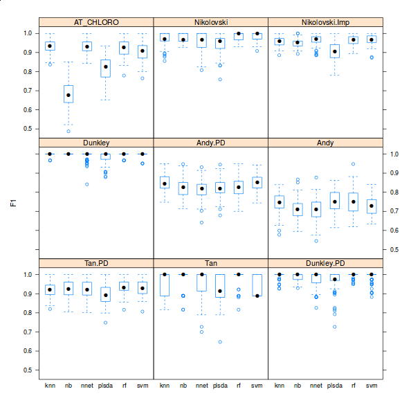
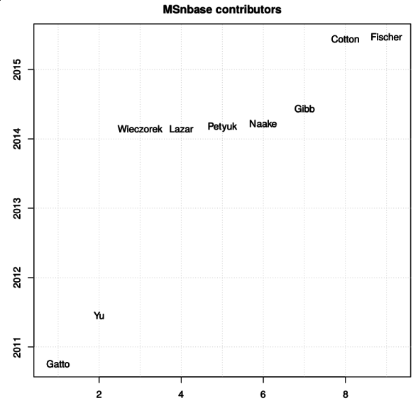
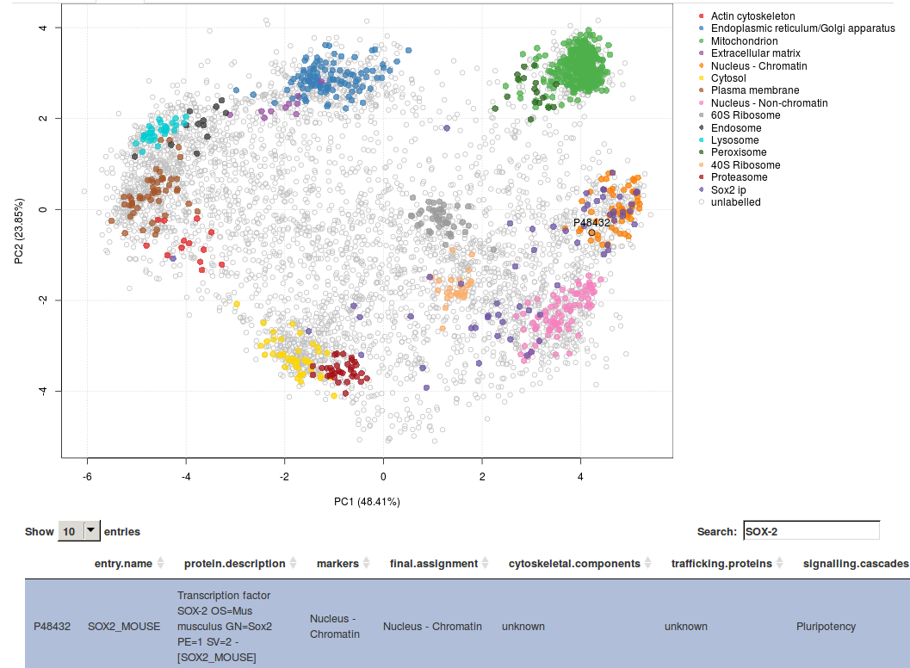

Computation spatial proteomics at CPU, 2010 - 2015
What have we achieved so far? We are Lisa Breckels and Laurent Gatto at the Computational Proteomics Unit (CPU), the University of Cambridge. This post summarises some of our progress in spatial proteomics since 2010, the year (October and January respectively) when we joined the Cambridge Centre for Proteomics, and later, in 2013, when the CPU was set up.
Spatial proteomics
Spatial proteomics is the systematic study of protein sub-cellular localisation. Building such sub-cellular maps was coined a method to watch, giving us an unprecedented picture of the [cellular] territory. Here, we will focus on high throughput approaches, based on sub-cellular fractionation and quantitative mass spectrometry. In a nutshell, the plasma membrane of cells is firstly disrupted so as to release their intact content, including organelles, vesicles and macro-molecular complexes. This sub-cellular content is then separated using, for example, a continuous density gradient and a set of discrete fractions are collected along the continuous separation gradient. Fractions towards the end of the gradient will be enriched in dense sub-cellular compartments that migrated further down the gradient, while fractions from the top of the gradient will be enriched in lighter, less dense compartments. The proteins contained in the discrete fractions are then extracted, identified and quantified using mass spectrometry. The relative protein intensities along the gradient (see top and right on the figure below) can then be used to recreate the original organelle-specific profiles. By matching protein profiles (grey profiles below) to those of marker proteins, i.e. genuine and well-known residents of specific compartments (coloured profiles), it is possible to assign un-labelled proteins to their sub-cellular localisation. Rather than visualising data along multiple line plots, we prefer to summaries all the data on a principal component analysis (PCA) plot (or other dimensionality reduction methods).

See Organelle proteomics experimental designs and analysis (Gatto et al. (2010)) for a general introduction to spatial proteomics.
Classification, software and reproducibility
The most direct analysis that one would do with spatial proteomics data is to assign proteins of unknown localisation to one of the labelled classes, i.e. organelles, defined by the annotated marker proteins. This is a straightforward application for supervised machine learning, i.e. classification.
Before summarising our contributions on that front, it is worth noting that, despite this being, in many respects, the main analysis that will address the key questions of such experiments, this is not the part of the analysis that will be most time consuming. On the contrary (there are other more important issues to tackle or improve), and this is pretty much a solved issue, that can be settled over coffee.
Below, I reproduce (with re-formatted references and links) an excerpt from our 2014 paper A foundation for reliable spatial proteomics data analysis.
The first applications of large-scale organelle proteomics data analysis were protein correlation profiling efforts (Foster et al. (2006), Andersen et al. (2003)) that calculated a \(\chi^2\) metric using in-house tools and LOPIT (Dunkley et al. (2006), Tan et al. (2009), Hall et al. (2009)) that applied partial least squares discriminant analysis using the commercial SIMCA software (Umetrics, Umea, Sweden). Trotter et al. (2010) implemented custom R code and used the SVM algorithm from the kernlab package, but no code for others to repeat this state-of-the-art procedure is provided. Others have applied other contemporary machine learning algorithms, including random forests (Ohta et al.(2010)), naive Bayes (Nikolovski et al. (2012)), and neutral networks (Tardiff et al. (2012)), but did not provide means to apply their analyses to new data. Although proteomics data are commonly being disseminated through appropriate repositories, it is not commonplace to provide reproducibility in terms of software and data analysis, despite their recognised importance (Aebersold (2011)).
There are however three important facts about these classification analyses that are never highlighted in the literature. First, there is very little or no attempt to offer access to code and the ability to reproduce the analyses. Second, the crucial parameter optimisation step is hardly addressed (see the pRoloc software and our reference above for details). Finally, possibly in an attempt to emphasise novelty in using other algorithms for the first time in such a context, it generally doesn’t matter what algorithms is used, as long as it is used adequately (see second point). Below is a figure taken from one of the pRoloc vignettes (manuals), that shows classifier accuracy metrics (F1 on the y axis) for various classifiers (k-nearest neighbours, naive Bayes, neural networks, partial least square discriminant analysis, random forests and support vector machines) for 9 different data sets (available in the pRolocdata package).

We have designed the pRoloc (Gatto et al. (2014)) software to support the consistent and reproducible analysis of such data.
Data handling, processing and visualisation
In addition to the classification of proteins of unknown localisation, we have developed a complete suite of data structures and data processing methods to explore quantitative proteomics data (Gatto et al. (2012)), such as our spatial proteomics experiments. An important aspect of this data exploration is the visualisation of spatial proteomics data using profile plots (to visualise the protein) and PCA plots. These have proven invaluable to inspect the quality of data, assess the separation along the density gradient and the compartment-specific data clusters, and, ultimately, to critically assess the results of the classification analysis.
More recently, we have been working on interactive interfaces (see for example here) to explore the data, available in the pRolocGUI package. The screen shot below illustrates the PCA interfaces that supports zooming, selection of sub-cellular niches to be displayed, searching, feature selection (by clicking points on the figures and lines in the feature table) to cite a few.

New algorithms
We have also developed novel algorithms to reveal new features and shed new light on these spatial proteomics data sets. All these new algorithms are readily available and documented in the pRoloc software.
Novelty detection
In Breckels et al. (2013), we published a semi-supervised novelty detection algorithm, coined phenoDisco, that mines the quantitative data for un-annotated data clusters to reveal sub-cellar niches that were not identified by the user (i.e. there were no protein markers for that specific sub-cellular compartments).
The figure below shows the application of the
phenoDisco
function on fly data from
Tan et al. (2009). Initially,
3 sub-cellular cluster were annotated, one of which combined ER and
Golgi (left). We re-analysed the same quantitative data matrix (right)
and identified a total of 12 sub-cellular niches, including ribosomal
clusters and deconvoluted the ER/Golgi clusters. In addition, on the
figure below, we used the classification score (SVM in this case) to
adjust the point size, to reflect better (larger points) prediction
accuracy.

Transfer learning
More recently in Breckels et al. (2015), we published a transfer learning algorithm that combines heterogeneous data such as mass spectrometry-based spatial proteomics data (our primary data, expensive to produce but of high quality and specific to a biological system and conditions of interest) and a secondary data source (generally readily available from third party resources) such as gene ontology annotations or sub-cellular imaging data (from the Human Protein Atlas, for example) to improve upon the assignment of proteins to their sub-cellular niche.
We implemented two approaches, one based on nearest neighbours that optimises weights for different data sources and different sub-cellular niches, and one based on support vector machines, utilising separate Gaussian kernels for the two data sources. We showed that combining these heterogeneous data sources substantially improves the classification accuracy. One particularly useful feature of the transfer learning was the improvement of the discrimination of true and false positives. Indeed, running a classification algorithm will classify every un-labelled protein to one of the labelled classes (sub-cellular niches). One can however never guarantee that all sub-cellular niches are present and it is widely known that proteins reside in multiple locations. As such, it is crucial to carefully set classification score thresholds to minimise false positive assignments. In the figure below, we compared the classification scores for one data classifier (knn or svm) to the data transfer learning version (knn-tl or svm-tl) using data for which true localisation was known, and compared correct and incorrect outcomes. We see that the separation between these correct an incorrect outcomes scores is greater for the transfer learning algorithms: it becomes much easier to set score thresholds that minimise incorrect outcomes while still maximising the number of correct predictions.

Software
An important achievement, that is not immediately obvious from
research papers, is the data management and analysis infrastructure
that we can rely on. In a matter of minutes, using our software, one
can generate an annotated R object (an
MSnSet)
from an arbitrary
spreadsheet,
if there already is one for the existing data, and
add markers
if they are not readily available, to visualise, explore and assess the
quality of the data. If appropriate, we can then readily run various
analyses such as
classification,
novelty detection
or
transfer learning. This
brings the analysis of spatial proteomics data on par with shotgun
proteomics or transcriptomics data, where easy things are
straightforward to do, and can be done consistently and
reproducibly. This infrastructure also offers robust grounds for
more complex analyses and developments; for example, all the transfer
learning methods and visualisation (both static and interactive) would
have been substantially more difficult to implement and disseminate to
the wider community. As we are using generic and well-defined data
structures, it is straightforward to apply these methods to different
types of experiment.
Another noteworthy aspect of our work is the open and collaborative
development of our software. Several packages that are used for the
analysis of quantitative spatial proteomics data, among others, have
benefited from a number of contributions. The figure below names the
contributors to the
MSnbase
(and here on GitHub) package
since 2010 (the initial public release).

Biology
Of course, what matters in the end, is how these progress impact on the biology. Consistency, replicability and sound algorithmic procedures can only have a positive impact on the validity of the biological interpretation of these data. But recent advances in data analyses as well as fractionation and mass spectrometry (hyperLOPIT, see Christoforou et al. (2016)) enables us to shed new lights on the spatial behaviour of proteins.
These high-throughput spatial proteomics experiments record the steady-state distributions of transitory proteins, revealing information about the state in the entire assessed cell population. One example from Christoforou et al. (2016) is the Tfe3 transcription factor (Q64092-4), a modulator of the exit of ES cells from pluripotency. As shown on the figure below, we infer a mixed localisation between the cytoplasm and nucleus from its position on the PCA plot. This mixed localisation is consistent with immunocytochemistry data in ES cells. In the pluripotent state, Tfe3 localises to both the nucleus and cytosol, and regulates the expression of key pluripotency factor Esrrb. In the early stages of differentiation, it is excluded from the nucleus (Betschinger et al. (2013)).

The PCA plot with Tfe3 can very easily be reproduced with the 9 lines of codes transcribed below.
This hyperLOPIT spatial proteomics data enables exploration of many additional cell features such as sub-organellar resolution, mapping of vesicles and protein complexes, mapping of the sub-cellular localisation of signalling cascade components (see for example the screenshot from our online GUI below, showing the spatial overview of the interaction partners of pluripotency Sox2 factor) and protein isoforms with differential sub-cellular localisation.

To further exploit these rich data, we organised a LOPIT hackathon to collaboratively explore and understand the spatial organisation of these cells.
Future
There is still much more we hope to achieve. We have been very active in developing better interactive interfaces to explore spatial proteomics data and plan offer dedicated infrastructure to widen dissemination of such data (both from our groups in Cambridge and others).
We have also recently applied for a BBSRC Tools and Resources development fund to develop a better statistical framework to reliably and systematically identify mixed localisation (see the Tfe3 example above) and changes in localisation upon perturbations, i.e. were proteins exhibit different sub-cellar localisation patterns in different conditions (see below).


Leave a Comment